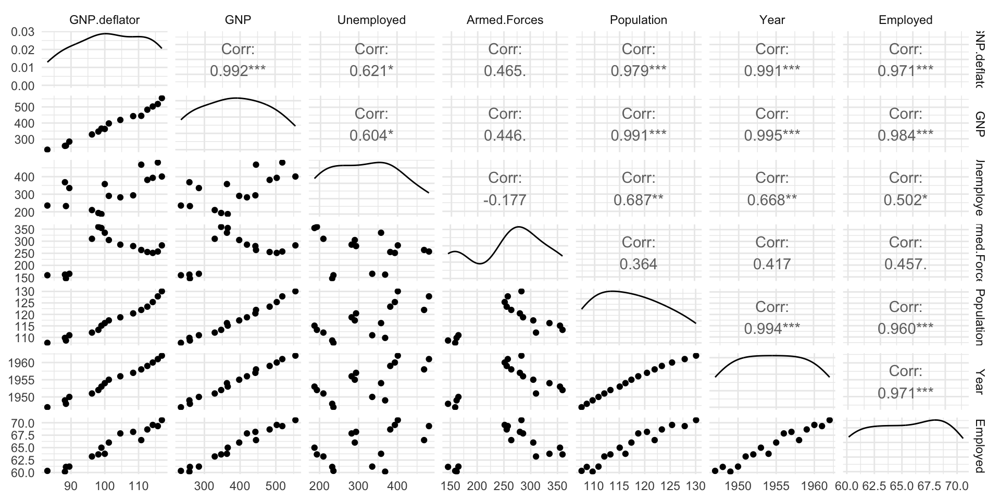

Inference: Multiple Regression
IMS1 Ch. 25
Interest Rates
loans 1 10,000 loans through Lending Club, individuals lend to each other
Response: interest_rate
Predictors: dept_to_income (debt to income ratio), term (number of months for loan), credit_checks (number of credit inquiries in last 12 months)
Multiple Regression Output
lm (interest_rate ~ debt_to_income + term + credit_checks, data = loans) |> tidy ()
# A tibble: 4 × 5
term estimate std.error statistic p.value
<chr> <dbl> <dbl> <dbl> <dbl>
1 (Intercept) 4.31 0.195 22.1 2.09e-105
2 debt_to_income 0.0408 0.00307 13.3 4.76e- 40
3 term 0.158 0.00417 37.9 6.24e-294
4 credit_checks 0.247 0.0193 12.8 3.29e- 37
Linear model: \[\begin{array}{rcl}\widehat{interest\_rate} &=& 4.31+0.0408\times debt\_to\_income\\ &+& 0.158 \times term +0.247\times credit\_checks\end{array}\]
# A tibble: 4 × 5
term estimate std.error statistic p.value
<chr> <dbl> <dbl> <dbl> <dbl>
1 (Intercept) 4.31 0.195 22.1 2.09e-105
2 debt_to_income 0.0408 0.00307 13.3 4.76e- 40
3 term 0.158 0.00417 37.9 6.24e-294
4 credit_checks 0.247 0.0193 12.8 3.29e- 37
A standard error and \(T\) -statistic is listed for each coefficient
We will not discuss the details of the standard error calculation (linear algebra)
# A tibble: 4 × 5
term estimate std.error statistic p.value
<chr> <dbl> <dbl> <dbl> <dbl>
1 (Intercept) 4.31 0.195 22.1 2.09e-105
2 debt_to_income 0.0408 0.00307 13.3 4.76e- 40
3 term 0.158 0.00417 37.9 6.24e-294
4 credit_checks 0.247 0.0193 12.8 3.29e- 37
Hypothesis test for coefficient for each predictor:
\(H_0: \beta_1=0\) , given term and credit_checks included in the model\(H_0: \beta_2=0\) , given debt_to_income and credit_checks included in the model\(H_0: \beta_3=0\) , given debt_to_income and term included in the model
For \(k\) predictors, \(df=n-k-1\)
# A tibble: 4 × 5
term estimate std.error statistic p.value
<chr> <dbl> <dbl> <dbl> <dbl>
1 (Intercept) 4.31 0.195 22.1 2.09e-105
2 debt_to_income 0.0408 0.00307 13.3 4.76e- 40
3 term 0.158 0.00417 37.9 6.24e-294
4 credit_checks 0.247 0.0193 12.8 3.29e- 37
All three coefficients are significant
For example, it would be extremely unlikely to obtain a value for the debt_to_income coefficient that is at least as extreme as 0.0408 if there is no relationship between interest rate an debt to income ratio
Interpreting Coefficients
# A tibble: 4 × 5
term estimate std.error statistic p.value
<chr> <dbl> <dbl> <dbl> <dbl>
1 (Intercept) 4.31 0.195 22.1 2.09e-105
2 debt_to_income 0.0408 0.00307 13.3 4.76e- 40
3 term 0.158 0.00417 37.9 6.24e-294
4 credit_checks 0.247 0.0193 12.8 3.29e- 37
The model predicts that interest rate will increase by 0.0408 for each increase of 1 in the debt to income ration (assuming the other predictors are held constant)
Interest rate is predicted to increase by 0.247 for each additional credit check
Does this mean that credit checks are more important than debt to income ratio?
It is not informative to compare coefficient values when the data are on different scales
debt_to_income19.3
15.0
term43.3
36
credit_checks1.96
2.3
Standardized Predictors
We can standardize the predictors by calculating the number of standard deviations each value is from the mean
The \(i\) th observation of the \(j\) th predictor \(x_j\) is standardized as \[u_{ij}=\frac{x_{ij}-\bar{x}_j}{s_j}\]
The standardized predictors have mean = 0, standard deviation = 1
Let’s standardize the predictors for the interest rate example
We can use the mutate function
<- loans |> mutate (debt_to_income = - mean (debt_to_income, na.rm = TRUE ))/ sd (debt_to_income, na.rm = TRUE )) |> mutate (term = - mean (term, na.rm = TRUE ))/ sd (term, na.rm = TRUE )) |> mutate (credit_checks = - mean (credit_checks, na.rm = TRUE ))/ sd (credit_checks, na.rm = TRUE ))
lm (interest_rate ~ debt_to_income + term + credit_checks, data = loans_standardized) |> tidy ()
# A tibble: 4 × 5
term estimate std.error statistic p.value
<chr> <dbl> <dbl> <dbl> <dbl>
1 (Intercept) 12.4 0.0459 270. 0
2 debt_to_income 0.612 0.0460 13.3 4.76e- 40
3 term 1.74 0.0460 37.9 6.24e-294
4 credit_checks 0.588 0.0460 12.8 3.29e- 37
The intercept is the predicted interest rate when each of the predictors have their mean value
If debt to income ratio is increased by 1 standard deviations, interest rate is predicted to increase by 0.612 (holding other predictors constant)
Similar interpretation for other coefficients
# A tibble: 4 × 5
term estimate std.error statistic p.value
<chr> <dbl> <dbl> <dbl> <dbl>
1 (Intercept) 12.4 0.0459 270. 0
2 debt_to_income 0.612 0.0460 13.3 4.76e- 40
3 term 1.74 0.0460 37.9 6.24e-294
4 credit_checks 0.588 0.0460 12.8 3.29e- 37
Since all predictors are on the same scale, coefficient comparisons are more meaningful
E.g., term has the largest impact on predicted interest_rate
p-values have not changed
Coins
Next we explore the money data set
Amount of money in different people’s coin dishes (simulated data)
Response: total_amount (USD)
Predictors: number_of_coins, number_of_low_coins (pennies, nickels, dimes)
We will use this dataset to explore multiple linear regression with correlated predictors
Relationships between the variables
Of course, there is a relationship between the total amount and each of the predictors
The number of coins and the number of low coins are also correlated
Multicollinearity occurs when the predictor variables are correlated with themselves
How is the multiple regression model affected by correlated predictors? \[\begin{array}{rcl}\widehat{total\_amount}&=&0.798 \\ &+& 0.206\times number\_of\_coins\\ &-& 0.160\times number\_of\_low\_coins\end{array}\]
lm (total_amount ~ number_of_coins + number_of_low_coins,data = money) |> tidy ()
# A tibble: 3 × 5
term estimate std.error statistic p.value
<chr> <dbl> <dbl> <dbl> <dbl>
1 (Intercept) 0.798 0.301 2.65 1.42e- 2
2 number_of_coins 0.206 0.0209 9.89 9.44e-10
3 number_of_low_coins -0.160 0.0291 -5.51 1.33e- 5
\[\begin{array}{rcl}\widehat{total\_amount}&=&0.798 \\ &+& 0.206\times number\_of\_coins\\ &-& 0.160\times number\_of\_low\_coins\end{array}\]
The relationship between the total amount and each predictor (when considered on its own) is positive
However, the coefficient for the number of low coins is negative in the multiple regression model
Why?
Intepreting Coefficients
\[\begin{array}{rcl}\widehat{total\_amount}&=&0.798 \\ &+& 0.206\times number\_of\_coins\\ &-& 0.160\times number\_of\_low\_coins\end{array}\]
The predicted amount increases by $0.206 for each additional coin, while keeping the number of low coins the same. A quarter is added.
The predicted amount decreases by $0.160 for each additional low coin, while keeping the number of coins the same. A quarter is replaced by a penny, nickel, or dime.
Multicollinearity
Multicollinearity is common when there are multiple predictors, especially in observational studies
Indicates that the predictors include some redundant information
Makes it difficult to interpret coefficients
Often results in models with high \(R^2\) , but few coefficients significantly different from 0
Can be avoided with careful experimental design (more on this later)
Macroeconomic Data
longley dataset 1 US macroeconomic data from 1947 to 1962 (n = 16)
Note that observations are dependent, because this is a time series
Response: Employed: number of people employed
Predictors:
GNP.deflator: GNP adjusted for inflationGNP: Gross National ProductUnemployed: Number of unemployed peopleArmed.Forces: Number of people in armed forcesPopulation: Noninstitutionalized people at least 14 years old
Predictors are collinear
library (GGally)|> ggpairs () + theme_minimal ()

Full Model
lm (Employed ~ ., data = longley) |> tidy ()
# A tibble: 7 × 5
term estimate std.error statistic p.value
<chr> <dbl> <dbl> <dbl> <dbl>
1 (Intercept) -3482. 890. -3.91 0.00356
2 GNP.deflator 0.0151 0.0849 0.177 0.863
3 GNP -0.0358 0.0335 -1.07 0.313
4 Unemployed -0.0202 0.00488 -4.14 0.00254
5 Armed.Forces -0.0103 0.00214 -4.82 0.000944
6 Population -0.0511 0.226 -0.226 0.826
7 Year 1.83 0.455 4.02 0.00304
VIF
The variance inflation factor (VIF) for the \(i\) th predictor is \[VIF_i=\frac{1}{1-R_i^2}\]
Here, \(R_i^2\) is the \(R^2\) obtained from for regression of predictor \(i\) in terms of the other predictors
\(R_i^2\) close to 1 indicates that predictor \(i\) is closely related to the other predictors and is redundant \(\rightarrow\) large \(VIF_i\) \(VIF_i>5\) is taken as an indication of collinearity
Variance inflation factors for longley data
library (car)lm (Employed ~ ., data = longley) |> vif ()
GNP.deflator GNP Unemployed Armed.Forces Population Year
135.53244 1788.51348 33.61889 3.58893 399.15102 758.98060
Manual Variable Selection
We can use VIF and p-values to manually reduce the size of the model
Remove predictors with high VIF, high p-values
Before we start, note that adjusted \(R^2\) for the full model is 0.992
lm (Employed ~ ., data = longley) |> glance ()
# A tibble: 1 × 12
r.squared adj.r.squared sigma statistic p.value df logLik AIC BIC
<dbl> <dbl> <dbl> <dbl> <dbl> <dbl> <dbl> <dbl> <dbl>
1 0.995 0.992 0.305 330. 4.98e-10 6 0.907 14.2 20.4
# ℹ 3 more variables: deviance <dbl>, df.residual <int>, nobs <int>
Full Model (6 Predictors)
# A tibble: 7 × 5
term estimate std.error statistic p.value
<chr> <dbl> <dbl> <dbl> <dbl>
1 (Intercept) -3482. 890. -3.91 0.00356
2 GNP.deflator 0.0151 0.0849 0.177 0.863
3 GNP -0.0358 0.0335 -1.07 0.313
4 Unemployed -0.0202 0.00488 -4.14 0.00254
5 Armed.Forces -0.0103 0.00214 -4.82 0.000944
6 Population -0.0511 0.226 -0.226 0.826
7 Year 1.83 0.455 4.02 0.00304
VIF
GNP.deflator GNP Unemployed Armed.Forces Population Year
135.53244 1788.51348 33.61889 3.58893 399.15102 758.98060
Population has a large p-value and large VIFEliminate it from the model
5 Predictor Model
lm (Employed ~ . - Population, data = longley) |> tidy ()
# A tibble: 6 × 5
term estimate std.error statistic p.value
<chr> <dbl> <dbl> <dbl> <dbl>
1 (Intercept) -3565. 772. -4.62 0.000957
2 GNP.deflator 0.0277 0.0607 0.456 0.658
3 GNP -0.0421 0.0176 -2.39 0.0379
4 Unemployed -0.0210 0.00303 -6.95 0.0000397
5 Armed.Forces -0.0104 0.00200 -5.21 0.000397
6 Year 1.87 0.399 4.68 0.000867
VIF
GNP.deflator GNP Unemployed Armed.Forces Year
76.641401 546.870494 14.289620 3.460846 644.626426
GNP.deflator has a large p-value and large VIFEliminate it from the model
4 Predictor Model
# A tibble: 5 × 5
term estimate std.error statistic p.value
<chr> <dbl> <dbl> <dbl> <dbl>
1 (Intercept) -3599. 741. -4.86 0.000503
2 GNP -0.0402 0.0165 -2.44 0.0328
3 Unemployed -0.0209 0.00290 -7.20 0.0000175
4 Armed.Forces -0.0101 0.00184 -5.52 0.000180
5 Year 1.89 0.383 4.93 0.000449
VIF
GNP Unemployed Armed.Forces Year
515.123851 14.108642 3.141581 638.128041
GNP has the largest p-value and large VIFEliminate it from the model
Final Model (3 Predictors)
# A tibble: 4 × 5
term estimate std.error statistic p.value
<chr> <dbl> <dbl> <dbl> <dbl>
1 (Intercept) -1797. 68.6 -26.2 5.89e-12
2 Unemployed -0.0147 0.00167 -8.79 1.41e- 6
3 Armed.Forces -0.00772 0.00184 -4.20 1.22e- 3
4 Year 0.956 0.0355 26.9 4.24e-12
VIF
Unemployed Armed.Forces Year
3.317929 2.223317 3.890861
All predictors have VIF < 5
All coefficients are significant
Adjusted \(R^2\) is 0.991, so model describes slightly less variability in employment than the full model
However, simple model with reduced/no collinearity is preferred
# A tibble: 1 × 12
r.squared adj.r.squared sigma statistic p.value df logLik AIC BIC
<dbl> <dbl> <dbl> <dbl> <dbl> <dbl> <dbl> <dbl> <dbl>
1 0.993 0.991 0.332 555. 3.92e-13 3 -2.76 15.5 19.4
# ℹ 3 more variables: deviance <dbl>, df.residual <int>, nobs <int>
Palmer Penguins
penguins dataset 1 Measurements for three species of penguins from Palmer Archipelago
Response: body_mass_g
Predictors:
species: Adelie, Chinstrap, or Gentoobill_length_mmbill_depth_mmflipper_length_mmsex: female or male
3 Predictor Model
I performed manual variable selection
Dropping species and bill_length_mm resulted in all predictors having VIF < 5 and all coefficiencts significantly different from 0
# A tibble: 4 × 5
term estimate std.error statistic p.value
<chr> <dbl> <dbl> <dbl> <dbl>
1 (Intercept) -2247. 625. -3.59 3.76e- 4
2 bill_depth_mm -86.9 15.5 -5.63 3.96e- 8
3 flipper_length_mm 38.2 2.08 18.3 3.47e-52
4 sexmale 538. 51.3 10.5 2.17e-22
VIF
bill_depth_mm flipper_length_mm sex
2.653895 2.444470 1.891038
Model Comparison
Does the simpler 3 predictor model predict body_mass_g as well as the full model?
We will also compare these two models to the best single predictor model, which uses flipper_length_mm as the predictor
We would like to compare how well each model performs on data that were not used to train/fit the model
One approach is to compare adjusted \(R^2\)
Full
species, bill_length_mm, bill_depth_mm, flipper_length_mm, sex0.873
3 predictor
bill_depth_mm, flipper_length_mm, sex0.844
1 predictor
flipper_length_mm0.758
Cross-Validation
Another approach is to use cross-validation
Divide the data into fourths (4-fold cross-validation)
We fit each model 4 times
Each time we hold out 1/4 of the data and fit the model to the remaining 3/4 of the data
Use the fitted model to predict body_mass_g on the 1/4 of the data we held back
Measure the prediction error (residual) on the holdout sample
Compare models using cross-validation SSE \[CV\,SSE=\sum_{i=1}^n(\hat{y}_{cv,i}-y_i)^2\]
Full
species, bill_length_mm, bill_depth_mm, flipper_length_mm, sex28,105,231
3 predictor
bill_depth_mm, flipper_length_mm, sex39,756,521
1 predictor
flipper_length_mm52,576,385
The full model has the smallest CV SSE
We expect the full model to perform better when predicting body_mass_g for penguins that were not used to fit the model